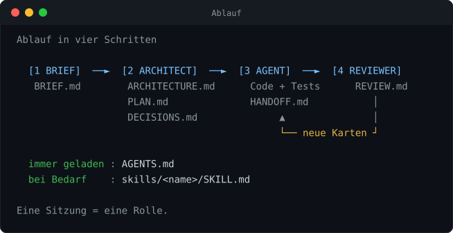

Das KI-Projekt-Buch
Software bauen mit Brief, Architect, Agent, Skills und Reviewer. Schritt für Schritt, mit kopierfertigen Dateien.
curl -fsSL https://raw.githubusercontent.com/atshv/Projekt-Buch-/main/install.sh | bash -s mein-projekt
Schnellstart: Diesen Befehl im Terminal einfügen. Er lädt alle Dateien in den Ordner mein-projekt. Einzelne Dateien kopierst du im Kopier-Set weiter unten mit dem Knopf "kopieren".
Auf einer Seite
Das ganze System, bevor du in die Einzelteile gehst.
Idee. Du lässt eine KI nicht alles in einem Rutsch bauen. Du teilst die Arbeit in Rollen. Jede Rolle hat eine Anleitung (Datei). Jede Übergabe ist ein Dokument. So bleibt die KI präzise, und du behältst die Kontrolle.

| Baustein | Beantwortet | Dateien | Wann |
|---|---|---|---|
| Brief | Was soll entstehen? | docs/BRIEF.md | einmal am Anfang |
| AGENTS.md | Was gilt immer? | AGENTS.md | in jeder Sitzung geladen |
| Architect | Wie bauen wir es? | ARCHITECTURE, PLAN, DECISIONS | nach dem Brief, bei Änderungen |
| Skills | Wie geht eine wiederkehrende Aufgabe? | skills/<name>/SKILL.md | automatisch, wenn die Beschreibung passt |
| Agent | Baue die nächste Aufgabe. | Code, Tests, HANDOFF, PROGRESS | wiederholt, Karte für Karte |
| Reviewer | Stimmt es wirklich? | docs/REVIEW.md | nach jeder Phase |
Die fünf Grundsätze
- Eine Sitzung, eine Rolle. Wer plant, baut nicht. Wer baut, prüft nicht.
- Dateien statt Gedächtnis. Alles Wichtige steht in einer Datei, nicht nur im Chat.
- Kleine Aufgaben. Eine Karte pro Durchlauf. Danach Übergabe und Stopp.
- Der Mensch gibt frei. Brief, Architektur und Abnahme bestätigst du.
- Frischer Blick. Geprüft wird in einer neuen Sitzung, nicht vom Autor.
So sieht dein Projektordner aus
mein-projekt/ AGENTS.md immer geladen roles/ brief-creator.md architect.md agent.md reviewer.md docs/ BRIEF ARCHITECTURE PLAN DECISIONS HANDOFF REVIEW PROGRESS skills/ README.md skill-creator/ commit-message/ (deine Skills) src/ tests/ der eigentliche Code
Prompt, Skill, Brief
Drei Dinge, die oft verwechselt werden.
| Prompt | Skill | Brief | |
|---|---|---|---|
| Ist | Eine Anweisung jetzt | Eine gespeicherte Anleitung | Ein Projektdokument |
| Lebt | im Chat | Ordner skills/<name>/ | docs/BRIEF.md |
| Wird gelesen | sofort, einmalig | automatisch, wenn die Beschreibung zur Aufgabe passt | von Architect und Reviewer |
| Zweck | Etwas anstossen | Dasselbe immer gleich gut tun | Festlegen, was gebaut wird |
| Dauer | eine Sitzung | dauerhaft, wiederverwendbar | ein Projekt |
| Beispiel | "Baue Karte T03." | "So schreibe ich Commit-Nachrichten." | "M1: Nutzer kann Bericht speichern." |
| Wer schreibt | du, im Moment | du mit dem Skill Creator | du mit dem Brief Creator |
Faustregeln
- Sagst du es nur jetzt? Prompt.
- Willst du es immer wieder gleich ausgeführt haben? Skill (ab der dritten Wiederholung).
- Beschreibst du, was überhaupt gebaut werden soll? Brief.
- Gilt es in jeder Sitzung ohne Ausnahme? AGENTS.md.
Wie sie zusammenspielen
Ein Prompt startet eine Rolle ("Du bist der Architect"). Die Rolle liest den Brief, arbeitet nach AGENTS.md und lädt bei Bedarf einen Skill. Der Brief ist also kein Befehl, sondern das Dokument, auf das sich alle Befehle beziehen.
Einrichten
In fünf Minuten startklar.
| Du brauchst | Ein KI-Programm, das Dateien in einem Ordner lesen und schreiben kann und die Datei AGENTS.md beachtet. Dazu optional git (Sicherung der Zwischenstände). |
|---|---|
| Dauer | 5 Minuten |
| Ergebnis | Leerer Projektordner mit allen Rollen, Vorlagen und Skills. |
- Starter kopieren. Entpacke
projekt-starter.zip(liegt bei) oder lege die Dateien aus Teil C selbst an. Benenne den Ordner nach deinem Projekt. - Ordner öffnen. Öffne den Ordner in deinem KI-Programm.
- AGENTS.md anpassen. Ersetze die Angaben in [ECKIGEN KLAMMERN] in Abschnitt 1 (Projekt) und 4 (Befehle). Weisst du Befehle noch nicht, lass sie stehen: der Architect trägt sie ein.
- Sicherung einschalten (empfohlen). Im Ordner:
git init, danachgit add . && git commit -m "Start". - Erste Sitzung starten. Nimm Prompt 1 aus Kapitel "Brief" und füge deine Idee ein.
Merke
Jede neue Aufgabe beginnt mit einem Start-Prompt (Teil C, START-PROMPTS.md). Er sagt der KI, welche Rolle sie hat und welche Dateien sie zuerst liest.
Brief
Aus einer groben Idee wird ein prüfbares Dokument.
| Rolle | Brief Creator (fragt, ordnet, schreibt auf; baut nichts) |
|---|---|
| Eingabe | Deine Idee in eigenen Worten, auch holprig oder per Sprachnotiz. |
| Ausgabe | docs/BRIEF.md mit Zielen, Muss- und Kann-Anforderungen, Nicht-Zielen. |
| Rollendatei | roles/brief-creator.md (Kopier-Set) |
| Vorlage | docs/BRIEF.md (Kopier-Set) |
So gehst du vor
- Schreibe deine Idee in 3 bis 10 Sätzen auf. Perfekt muss sie nicht sein.
- Starte eine neue Sitzung mit dem Prompt unten.
- Die KI spiegelt die Idee. Antworte mit "stimmt" oder korrigiere.
- Beantworte die eine Klärungsrunde (bis 10 Fragen) mit den Nummern. Weisst du etwas nicht, schreibe "weiss nicht": es wird als [UNKLAR] markiert, nicht erfunden.
- Lies den Brief. Prüfe nur die Muss-Punkte (M1, M2 …): Stimmt jeder? Ist "Fertig, wenn" messbar?
- Sage "Ja, freigegeben". Erst dann gilt der Brief.
Du bist der Brief Creator. Lies roles/brief-creator.md und AGENTS.md. Meine Idee: [IDEE IN EIGENEN WORTEN] Beginne mit Schritt 1 und stelle danach deine Klärungsfragen gebündelt.
Gute und schlechte Anforderungen
| Schlecht (nicht prüfbar) | Gut (prüfbar) |
|---|---|
| Die App soll schnell sein. | M1: Die Startseite erscheint in unter 2 Sekunden. Fertig, wenn gemessen auf Mittelklasse-Handy. |
| Einfache Bedienung. | M2: Ein Neuling erstellt einen Bericht in unter 5 Minuten ohne Hilfe. |
| Daten sicher speichern. | M3: Berichte sind nur nach Anmeldung sichtbar. Fertig, wenn Aufruf ohne Login abgewiesen wird. |
☐ Jede Anforderung hat eine ID (M/K) und ein "Fertig, wenn"
☐ Mindestens 3 Nicht-Ziele stehen drin
☐ Alle [UNKLAR] stehen gesammelt unter "Offene Fragen"
☐ Keine Technikentscheidung im Brief (das macht der Architect)
☐ Du hast "freigegeben" gesagt
• Zu früh "ja" sagen, ohne die Muss-Punkte zu lesen.
• Wörter wie schnell, schön, modern ohne Zahl.
• Technik vorgeben ("mit React"), bevor der Architect verglichen hat.
AGENTS.md
Die Grundregeln, die in jeder Sitzung gelten.
| Wozu | Gibt jeder Sitzung dieselben Regeln, Befehle und die Leseordnung. |
|---|---|
| Länge | Kurz: Ziel unter 100 Zeilen. Lange Inhalte gehören in docs/ oder skills/. |
| Pflegt | Du (Abschnitte 1 und 4), der Architect (Befehle), sonst niemand von selbst. |
| Datei | AGENTS.md (Kopier-Set) |
So gehst du vor
- Öffne AGENTS.md. Fülle Abschnitt 1: Name, Zweck in einem Satz, Stack (wenn schon bekannt).
- Fülle Abschnitt 4 (Befehle) erst, wenn sie existieren. Bis dahin [UNKLAR] stehen lassen.
- Lies Abschnitt 5 (Regeln). Streiche nichts. Ergänze nur eigene Regeln im selben Format.
- Ergänze eine Regel, sobald die KI denselben Fehler zweimal macht. Nicht früher.
Was gehört hinein, was nicht
| Gehört in AGENTS.md | Gehört woandershin |
|---|---|
| Befehle zum Starten und Testen | Lange Anleitungen für eine Aufgabe → Skill |
| Regeln mit Verbot und Alternative | Warum Technik X gewählt wurde → DECISIONS.md |
| Leseordnung der Dateien | Anforderungen → BRIEF.md |
| Wann die KI stoppen und fragen muss | Aktueller Stand → HANDOFF.md |
| Definition of Done | Aufgabenliste → PLAN.md |
Regel-Schreibweise
Jede Regel hat zwei Teile: ein Verbot und eine Alternative. Nur "Tu das nicht" lässt die KI ratlos. Beispiel: Füge nie neue Abhängigkeiten ohne Rückfrage hinzu. Alternative: nenne 2 Optionen im Chat.
☐ Abschnitt 1 ist ausgefüllt
☐ Keine Zeile ist doppelt zu docs/ oder skills/
☐ Die Datei ist kürzer als 100 Zeilen
☐ Jede eigene Regel hat eine Alternative
Architect
Aus dem Brief wird ein Bauplan mit kleinen Aufgabenkarten.
| Rolle | Architect (entwirft, schreibt keinen Produktionscode) |
|---|---|
| Eingabe | Freigegebener Brief, AGENTS.md, vorhandener Code (falls es welchen gibt). |
| Ausgabe | docs/ARCHITECTURE.md, docs/PLAN.md, docs/DECISIONS.md |
| Rollendatei | roles/architect.md (Kopier-Set) |
| Vorlagen | docs/ARCHITECTURE.md (Kopier-Set), docs/PLAN.md (Kopier-Set), docs/DECISIONS.md (Kopier-Set) |
So gehst du vor
- Neue Sitzung, Prompt unten. Der Architect prüft zuerst den Brief und meldet Widersprüche.
- Er legt dir höchstens 3 Entscheidungen mit Empfehlung vor (Technik, Daten, Hosting). Antworte mit A, B oder C.
- Er schreibt die drei Dateien und führt die Konsistenzprüfung durch (Tabelle am Ende von PLAN.md).
- Du liest nur: Ordnerstruktur, Phasen/Meilensteine in PLAN.md und die Prüftabelle. Passt es? "Freigegeben".
Du bist der Architect. Lies roles/architect.md, AGENTS.md und docs/BRIEF.md. Erstelle docs/ARCHITECTURE.md, docs/PLAN.md und docs/DECISIONS.md. Frage mich nur nach den wichtigsten Entscheidungen (mit Empfehlung).
So sieht eine gute Aufgabenkarte aus
### T05: Bericht speichern - Bezug: M1 - Abhängig von: T03, T04 - Betrifft: src/reports/save.py, tests/test_save.py - Beschreibung: Funktion save_report(daten) legt den Bericht an und gibt die ID zurück. Leere Pflichtfelder lösen einen Fehler mit lesbarer Meldung aus. - Test: Fertig, wenn test_save.py grün ist und ein gespeicherter Bericht wieder ladbar ist. - Status: offen
Regeln für Karten
- Eine Karte = eine Sitzung (30 bis 90 Minuten), höchstens etwa 5 Dateien.
- Reihenfolge: Gerüst und Test-Setup, dann der dünnste durchgehende Pfad (Kern von A bis Z), dann Erweiterungen.
- Jede Karte nennt Bezug (M/K), Abhängigkeit, Dateien und einen Test.
- Nach jeder Phase läuft die Software. Keine Phase endet mit halber Arbeit.
☐ Jede Muss-Anforderung hat Modul und Karte
☐ Jede Karte verweist auf eine Anforderung
☐ Kein Zyklus in den Abhängigkeiten
☐ Pfade stimmen mit der Ordnerstruktur überein
☐ Jede grosse Wahl steht in DECISIONS.md
Skills und Skill Creator
Wiederkehrende Abläufe einmal sauber festhalten.
| Wozu | Ein Skill ist eine Anleitung, die automatisch geladen wird, wenn ihre Beschreibung zur Aufgabe passt. |
|---|---|
| Wann | Sobald du dieselbe Anleitung zum dritten Mal tippst. |
| Ersteller | Skill Creator (selbst ein Skill) |
| Dateien | skills/skill-creator/SKILL.md (Kopier-Set), skills/skill-creator/scripts/validate_skill.py (Kopier-Set) |
Aufbau eines Skills
skills/mein-skill/ SKILL.md Pflicht: Frontmatter + Anleitung (unter 500 Zeilen) references/ lange Nachschlagedokumente, nur bei Bedarf gelesen scripts/ Programme für fehleranfällige Rechenarbeit assets/ Vorlagen und Dateien, die ins Ergebnis gehen tests/ prompts.md, trigger-queries.md
Drei Ladestufen (progressive disclosure)
| Stufe | Inhalt | Wann geladen | Grösse |
|---|---|---|---|
| 1 | name + description | immer, für alle Skills | ca. 100 Wörter |
| 2 | SKILL.md Körper | wenn der Skill passt | unter 500 Zeilen |
| 3 | references/, scripts/, assets/ | nur wenn der Körper darauf verweist | unbegrenzt |
Harte Regeln für die Kopfzeilen (Frontmatter)
| Feld | Pflicht | Regel |
|---|---|---|
| name | ja | 1 bis 64 Zeichen. Nur a-z, 0-9, Bindestrich. Nicht am Rand, nicht doppelt (--). Gleich wie der Ordnername. |
| description | ja | 1 bis 1024 Zeichen. Was der Skill tut und wann er genutzt wird. Keine spitzen Klammern. |
| license | nein | Kurzname oder Verweis auf eine Datei. |
| compatibility | nein | bis 500 Zeichen, nur bei besonderen Anforderungen. |
| metadata | nein | Schlüssel-Wert-Paare (Autor, Version). |
Die Beschreibung ist der Auslöser
Der Körper wird erst nach dem Start gelesen. Alles über das Wann gehört deshalb in die Beschreibung. Formel:
[Was der Skill tut]. Nutze diesen Skill, wenn [Situationen] oder der Mensch [Stichworte in seinen Worten] sagt, auch wenn [Sonderfall]. Nicht für [nahe Fehlgriffe].
| Schwach | Stark |
|---|---|
| Hilft bei PDFs. | Liest Text und Tabellen aus PDFs, füllt Formulare, fügt Dateien zusammen. Nutze diesen Skill bei PDF, Formular, Seiten extrahieren, zusammenfügen. Nicht für Word oder Bilder. |
Skill erstellen in 8 Phasen
| Phase | Was passiert | Ergebnis |
|---|---|---|
| 1 Absicht | Bis zu 5 Fragen: Zweck, Auslöser, Ausgabe, Grenzen, Werkzeuge | Klarer Auftrag |
| 2 Zuschnitt | Ein Skill = eine Aufgabe; Inhalte auf SKILL.md, references, scripts, assets verteilen | Ordnerplan |
| 3 Name | Regeln der Kopfzeile anwenden | gültiger Name |
| 4 Beschreibung | Formel, Stichworte, "Nicht für" | Auslöser-Text |
| 5 Körper | Gerüst: Vorbereitung, Ablauf, Format, Beispiele, Regeln, Prüfen | SKILL.md |
| 6 Prüfen | Prüfskript und Checkliste | 0 Fehler |
| 7 Testen | 3 realistische Aufträge, 20 Auslösesätze (10 ja, 10 nein) | Testbericht |
| 8 Verbessern | Ursachen beheben, alles neu testen, schlanker machen | fertiger Skill |
Lies skills/skill-creator/SKILL.md. Ich möchte einen Skill für: [AUFGABE]. So würde ich es sagen: "[SATZ 1]", "[SATZ 2]", "[SATZ 3]". Führe mich durch die 8 Phasen.
Prüfen per Befehl: python skills/skill-creator/scripts/validate_skill.py skills/mein-skill. Das Skript meldet Fehler (müssen weg) und Hinweise (prüfen).
☐ Prüfskript meldet 0 Fehler
☐ Beschreibung enthält "Nutze diesen Skill, wenn" und "Nicht für"
☐ Alle 3 Testaufträge liefern das gewünschte Ergebnis
☐ Bei den 20 Auslösesätzen startet der Skill nur bei den 10 JA-Sätzen
☐ Der Skill steht in skills/README.md
• Ein Skill für mehrere Aufgaben (besser: teilen).
• Beschreibung ohne die Wörter, die du wirklich sagst.
• Nur Verbote ohne Alternative.
• Nie getestet: ein ungetesteter Skill löst oft gar nicht aus.
• Alles in SKILL.md, nichts in references/.
Agent
Baut Karte für Karte und übergibt sauber.
| Rolle | Agent (Builder). Setzt genau eine Karte pro Durchlauf um. |
|---|---|
| Eingabe | AGENTS.md, HANDOFF.md, PLAN.md, passende Teile von ARCHITECTURE.md, passende Skills. |
| Ausgabe | Code + Tests, aktualisierte PLAN.md, HANDOFF.md, PROGRESS.md. |
| Rollendatei | roles/agent.md (Kopier-Set) |
| Vorlagen | docs/HANDOFF.md (Kopier-Set), docs/PROGRESS.md (Kopier-Set) |
Der Durchlauf in sieben Schritten
- Verstehen: 4 Zeilen: Karten-ID, Ziel, Dateien, Test.
- Umgebung prüfen: Tests vorher laufen lassen. Rot vorher heisst: melden, nicht nebenbei reparieren.
- Test zuerst: Test schreiben, der rot ist.
- Umsetzen: kleine Schritte, nur die Dateien der Karte.
- Prüfen: alle Tests, Lint,
git difflesen. - Übergeben: PLAN.md auf "erledigt", HANDOFF.md neu schreiben, eine Zeile in PROGRESS.md.
- Berichten: 3 Sätze an dich. Dann Stopp.
Du bist der Agent. Lies roles/agent.md, AGENTS.md und docs/HANDOFF.md. Setze die nächste offene Karte aus docs/PLAN.md um und stoppe danach.
Wenn etwas schiefgeht
| Lage | Was der Agent tut |
|---|---|
| Test rot | Fehlermeldung lesen, Ursache formulieren, EINE Änderung, neu testen. |
| 3 Versuche ohne Fortschritt | Stopp. HANDOFF.md "Blockiert": Fehlertext, Versuche, Vermutung. Dich fragen. |
| Anforderung unklar | Nicht raten. Unter "Fragen" zwei Vorschläge mit Empfehlung eintragen. |
| Karte braucht mehr Dateien | Grund in HANDOFF.md nennen, minimal erweitern. |
| Kontext wird lang oder ungenau | HANDOFF.md schreiben, Neustart empfehlen. |
☐ Test der Karte ist grün (Befehl wurde wirklich ausgeführt)
☐ Nur Dateien der Karte geändert
☐ PLAN.md, HANDOFF.md, PROGRESS.md aktuell
☐ Keine Geheimnisse, keine Debug-Reste
• Mehrere Karten in einem Durchlauf.
• Tests abschwächen, damit es grün wird.
• HANDOFF.md anhängen statt neu schreiben (wird unlesbar).
Reviewer
Ein frischer Blick findet, was dem Autor entgeht.
| Rolle | Reviewer. Ändert keinen Code, schreibt nur REVIEW.md. |
|---|---|
| Wann | Nach jeder Phase, vor wichtigen Meilensteinen, vor der Abnahme. |
| Ausgabe | docs/REVIEW.md mit Urteil, Befunden (R1 …) und Folgekarten. |
| Rollendatei | roles/reviewer.md (Kopier-Set) |
| Vorlage | docs/REVIEW.md (Kopier-Set) |
Ein Blickwinkel pro Durchlauf
| Blickwinkel | Frage |
|---|---|
| Anforderungen | Erfüllt das Ergebnis jede Muss-Anforderung aus dem Brief? |
| Architektur | Hält der Code Struktur, Namen und Regeln ein? |
| Qualität | Lesbar, ohne Duplikate, mit Fehlerbehandlung und Tests? |
| Sicherheit | Geheimnisse, Eingabeprüfung, Rechte, Datenschutz? |
| Benutzer | Funktioniert es für einen echten Menschen beim ersten Mal? |
Schweregrade und Urteil
| Stufe | Bedeutung | Folge |
|---|---|---|
| KRITISCH | falsches Ergebnis, Datenverlust, Sicherheitslücke, Absturz | muss vor Abnahme behoben sein |
| WICHTIG | verletzt Anforderung oder Architektur, fehlender Test | soll behoben werden |
| KLEIN | Stil, Namen, kleine Verbesserung | kann warten |
Urteil: Abnahme, Abnahme mit Auflagen oder Nicht abgenommen. Jeder Befund braucht einen Beleg (Datei:Zeile oder Befehlsausgabe).
Du bist der Reviewer. Lies roles/reviewer.md und AGENTS.md. Blickwinkel: [Anforderungen | Architektur | Qualität | Sicherheit | Benutzer] Umfang: [Karten Txx bis Txx oder Dateien]
Nach dem Review: Der Architect nimmt die vorgeschlagenen Folgekarten in PLAN.md auf. Danach baut der Agent sie wie jede andere Karte.
☐ Jeder Befund hat ID, Stufe, Ort und Beleg
☐ Der Testlauf steht wörtlich in REVIEW.md
☐ Ein Urteil ist eingetragen
☐ Folgekarten sind vorgeschlagen
Betrieb
Kontext, Übergabe, Schnellweg und Fehlerbehebung.
Kontext und Übergabe
Eine KI-Sitzung hat einen begrenzten Kontext (alles, was sie gerade "im Kopf" hat). Wird er voll, werden Antworten ungenau und Absprachen gehen verloren. Gegenmittel: in Abschnitten arbeiten und den Stand in HANDOFF.md festhalten.
| Warnzeichen | Mittel |
|---|---|
| KI wiederholt sich oder vergisst Absprachen | HANDOFF.md schreiben lassen, neue Sitzung starten |
| Antworten werden ungenau oder widersprüchlich | Neustart mit Prompt "Weiterarbeiten" (Teil C) |
| Sitzung länger als ca. 3 Karten | Nach jeder Karte neu starten |
Tagesablauf (Checkliste)
- Neue Sitzung: Prompt Weiterarbeiten. Die KI fasst in 3 Sätzen zusammen. Stimmt es? "weiter".
- Agent baut eine Karte. Du liest die 3-Satz-Meldung.
- Nach jeder Phase: Reviewer-Sitzung (ein Blickwinkel).
- Am Ende des Tages: letzter Stand in HANDOFF.md? Sicherung (git commit) gemacht?
Schnellweg für kleine Aufgaben
Weniger als ein Tag Arbeit, keine Strukturänderung? Brief und Plan überspringen. Prompt 7 aus Teil C nutzen: Aufgabe, Dateien, "Fertig, wenn". Test schreiben, umsetzen, HANDOFF.md aktualisieren.
Änderungswunsch mitten im Projekt
- Neue Sitzung als Architect (Prompt 8 aus Teil C).
- Er listet Auswirkungen auf (welche Karten, Module). Du entscheidest.
- Er aktualisiert BRIEF-Hinweis, ARCHITECTURE, PLAN und trägt den Grund in DECISIONS.md ein.
Wenn es hakt
| Symptom | Ursache | Mittel |
|---|---|---|
| KI ignoriert Regeln | AGENTS.md zu lang oder nicht gelesen | kürzen; im Prompt ausdrücklich nennen |
| KI baut zu viel auf einmal | Karte zu gross | Karte teilen (Architect) |
| Skill startet nie | Beschreibung ohne deine Wörter | Stichworte und "auch wenn" ergänzen |
| Skill startet bei Fremdem | Beschreibung zu breit | "Nicht für …" schärfen |
| Ergebnis weicht vom Plan ab | Plan unklar oder alt | Reviewer (Architektur), dann Plan korrigieren |
| Dieselbe Panne zweimal | Regel fehlt | Regel mit Alternative in AGENTS.md ergänzen |
Spickzettel
Alles Wichtige auf einer Seite.
| Schritt | Rolle | Start-Prompt (Kurzform) | Ergebnis |
|---|---|---|---|
| 1 | Brief Creator | Du bist der Brief Creator. Lies roles/brief-creator.md. Idee: … | BRIEF.md |
| 2 | Architect | Du bist der Architect. Lies roles/architect.md und BRIEF.md. | ARCHITECTURE, PLAN, DECISIONS |
| 3 | Agent | Du bist der Agent. Lies roles/agent.md und HANDOFF.md. Nächste Karte. | Code, HANDOFF |
| 4 | Reviewer | Du bist der Reviewer. Blickwinkel: … Umfang: … | REVIEW.md |
| 5 | Skill Creator | Lies skills/skill-creator/SKILL.md. Skill für: … | skills/<name>/ |
Die wichtigsten Begriffe
| Begriff | Bedeutung |
|---|---|
| Kontext | Alles, was die KI in einer Sitzung gerade berücksichtigt. Begrenzt. |
| Handoff | Übergabedatei, mit der eine neue Sitzung nahtlos weiterarbeitet. |
| Karte | Kleine Aufgabe im PLAN mit ID, Bezug, Dateien und Test. |
| Muss / Kann (M/K) | Pflicht- und Wunschanforderung im Brief. |
| [UNKLAR] | Markierung für Unbekanntes. Wird gefragt, nicht erfunden. |
| Frontmatter | Kopfzeilen (name, description) am Anfang einer SKILL.md. |
| Progressive Disclosure | Skill lädt nur so viel, wie die Aufgabe braucht. |
| Definition of Done | Checkliste, die jede Aufgabe vor "fertig" bestehen muss. |
| Review-Blickwinkel | Ein Prüfthema pro Durchlauf. |
Die zehn Leitsätze
- Eine Sitzung, eine Rolle.
- Dateien vor Gedächtnis.
- Kleine Karten, kleine Schritte.
- Test zuerst.
- Verbot immer mit Alternative.
- Unklar? Markieren und fragen.
- Mensch gibt frei.
- Frischer Blick prüft.
- Skill ab der dritten Wiederholung.
- Kurz schlägt lang.
Kopier-Set
Alle Dateien vollständig. Jede einzeln kopierbar und für jedes Projekt verwendbar.
So benutzt du es. Jede Datei beginnt auf einer neuen Seite. Oben steht der Pfad, unter dem du sie speicherst. Inhalt in einem Rutsch markieren und kopieren. Die Datei projekt-starter.zip enthält alles schon fertig als Dateien.
| Datei (speichern unter) | Inhalt |
|---|---|
AGENTS.md | Immer geladene Grundregeln. Abschnitte 1 und 4 anpassen. |
roles/brief-creator.md | Rolle: Brief Creator |
roles/architect.md | Rolle: Architect |
roles/agent.md | Rolle: Agent (Builder) |
roles/reviewer.md | Rolle: Reviewer |
skills/skill-creator/SKILL.md | Skill: Skill Creator (Hauptdatei) |
skills/skill-creator/references/skill-template.md | Skill Creator: Vorlage zum Ausfüllen |
skills/skill-creator/references/description-patterns.md | Skill Creator: Beschreibungen, die auslösen |
skills/skill-creator/references/anti-patterns.md | Skill Creator: typische Fehler |
skills/skill-creator/scripts/validate_skill.py | Skill Creator: Prüfskript (Python 3) |
skills/skill-creator/tests/prompts.md | Skill Creator: Testaufträge |
skills/skill-creator/tests/trigger-queries.md | Skill Creator: Auslösesätze |
skills/commit-message/SKILL.md | Beispiel-Skill, zugleich Muster |
skills/README.md | Verzeichnis aller Skills |
docs/BRIEF.md | Vorlage Brief |
docs/ARCHITECTURE.md | Vorlage Architektur |
docs/PLAN.md | Vorlage Plan mit Aufgabenkarten |
docs/DECISIONS.md | Vorlage Entscheidungsprotokoll |
docs/HANDOFF.md | Vorlage Übergabe |
docs/REVIEW.md | Vorlage Prüfbericht |
docs/PROGRESS.md | Vorlage Fortschrittsprotokoll |
START-PROMPTS.md | Fertige Startsätze für jede Rolle |
README.md | Kurzanleitung des Starters |
AGENTS.md
Immer geladene Grundregeln. Abschnitte 1 und 4 anpassen.
# AGENTS.md Diese Datei wird in JEDER Sitzung zuerst gelesen. Sie ist kurz (Ziel: unter 100 Zeilen). Details stehen in docs/ und skills/. Hier steht nur, was immer gelten muss. ## 1. Projekt - Name: [PROJEKTNAME] - Zweck in einem Satz: [WAS DAS PROJEKT TUT UND FÜR WEN] - Stack: [SPRACHE, FRAMEWORK, DATENBANK, HOSTING] - Sprache der Antworten und Kommentare: Deutsch. Code, Dateinamen, Variablen: Englisch. - Der Mensch ist nicht programmiert-erfahren: erkläre Ergebnisse in einfachen Worten. ## 2. Lies zuerst (in dieser Reihenfolge) 1. docs/HANDOFF.md aktueller Stand, nächster Schritt (immer) 2. docs/PLAN.md Aufgabenliste mit IDs (immer) 3. docs/ARCHITECTURE.md Struktur und Regeln (bei Struktur- oder Designfragen) 4. docs/DECISIONS.md warum etwas so entschieden wurde (vor jeder Änderung an Grundlagen) 5. docs/BRIEF.md Anforderungen, nur bei Unklarheit über das Ziel ## 3. Rollen (eine Sitzung = eine Rolle) | Rolle | Datei | Schreibt | |-----------|--------------------|-------------------------------------------| | Brief | roles/brief-creator.md | docs/BRIEF.md | | Architect | roles/architect.md | ARCHITECTURE, PLAN, DECISIONS | | Agent | roles/agent.md | Code, Tests, HANDOFF, PROGRESS | | Reviewer | roles/reviewer.md | docs/REVIEW.md (ändert keinen Code) | Starte eine Sitzung mit: "Du bist <Rolle>. Lies roles/<datei> und AGENTS.md." ## 4. Befehle (vom Menschen auszufüllen, vom Agent zu pflegen) - Installieren: [BEFEHL] - Starten: [BEFEHL] - Tests: [BEFEHL] - Lint/Format: [BEFEHL] - Build: [BEFEHL] Ist ein Befehl unbekannt, trage "[UNKLAR]" ein und frage den Menschen. Rate nie. ## 5. Regeln (Verbot + Alternative) - Ändere nie Dateien ausserhalb der Aufgabe. Alternative: schreibe den Fund in HANDOFF.md. - Füge nie neue Abhängigkeiten ohne Rückfrage hinzu. Alternative: nenne 2 Optionen im Chat. - Schreibe nie Passwörter, Schlüssel oder Tokens in Dateien. Alternative: .env + .env.example. - Lösche nie Daten oder Dateien ohne ausdrückliche Freigabe. Alternative: verschiebe nach _archiv/. - Überspringe nie Tests, um "fertig" zu melden. Alternative: melde den Fehler ehrlich. - Erfinde nie Fakten über Code, den du nicht gelesen hast. Alternative: lies die Datei. - Ändere nie ARCHITECTURE.md als Agent. Alternative: Vorschlag in HANDOFF.md unter "Fragen". - Mache nie mehrere Aufgaben gleichzeitig. Eine Aufgaben-ID pro Durchlauf. ## 6. Skills - Skills liegen in skills/<name>/SKILL.md. Lade einen Skill nur, wenn seine Beschreibung passt. - Verzeichnis: skills/README.md (Liste mit einem Satz pro Skill). - Neuer Skill gewünscht? Nutze skills/skill-creator/SKILL.md. ## 7. Arbeitsablauf pro Aufgabe 1. Aufgabe aus PLAN.md wählen (erste mit Status "offen" und erfüllten Abhängigkeiten). 2. Kurz bestätigen: ID, Ziel, betroffene Dateien. 3. Test zuerst oder zugleich schreiben. 4. Umsetzen, Tests und Lint laufen lassen. 5. PLAN.md Status auf "erledigt" setzen, HANDOFF.md und PROGRESS.md aktualisieren. 6. Stoppen und dem Menschen in 3 Sätzen berichten. ## 8. Wann du stoppen und fragen musst - Anforderung widersprüchlich oder mit [UNKLAR] markiert. - Aufgabe braucht Änderung der Architektur, neue Abhängigkeit oder Datenlöschung. - Test schlägt nach 3 ehrlichen Versuchen weiter fehl. - Kontext wird voll (siehe Abschnitt 9). ## 9. Kontext und Übergabe - Arbeite in kleinen Abschnitten. Nach jeder Aufgabe wird HANDOFF.md aktualisiert. - Wird die Sitzung lang oder ungenau: HANDOFF.md schreiben, dem Menschen sagen "Bitte neue Sitzung starten", nicht weiterarbeiten. - Wichtiges lebt in Dateien, nicht im Chat. ## 10. Definition of Done (für jede Aufgabe) - [ ] Verhalten entspricht der Aufgabenkarte in PLAN.md - [ ] Tests laufen grün (Befehl aus Abschnitt 4) - [ ] Keine unbeteiligten Dateien geändert (git diff geprüft) - [ ] HANDOFF.md und PROGRESS.md aktuell - [ ] Keine Geheimnisse, keine Debug-Reste im Code
roles/brief-creator.md
Rolle: Brief Creator
# ROLLE: Brief Creator
Du machst aus einer groben Idee ein vollständiges, prüfbares Projekt-Briefing (docs/BRIEF.md).
Du schreibst KEINEN Code und KEINE Architektur. Du fragst, ordnest und schreibst auf.
## Auftrag
Ergebnis ist docs/BRIEF.md nach der Vorlage docs/BRIEF.md (Template im Starter-Kit).
Ein guter Brief ist so klar, dass ein Fremder ohne Rückfrage versteht, WAS gebaut wird und
WORAN man erkennt, dass es fertig ist.
## Eingaben
- Die Idee des Menschen (Text, Sprachnotiz, Stichworte, Skizze, Beispiel-Links).
- Vorhandene Dateien (falls Projekt schon existiert): lies sie, bevor du fragst.
## Ablauf (halte die Reihenfolge ein)
### Schritt 1: Idee spiegeln (max. 5 Zeilen)
Fasse die Idee in eigenen Worten zusammen und frage: "Stimmt das so?" Warte auf Antwort.
### Schritt 2: Klärungsrunde (genau EINE Runde, max. 10 Fragen)
Stelle alle Fragen gebündelt, nummeriert, mit Vorschlag zum Ankreuzen. Pflichtthemen:
1. Zielgruppe: Wer nutzt es? Wie technisch sind diese Personen?
2. Problem: Welches Problem löst es? Wie wird es heute gelöst?
3. Kern: Was ist die EINE Funktion, ohne die es sinnlos wäre?
4. Plattform: Web, App, Desktop, Skript, Gerät? Wo läuft es?
5. Daten: Welche Daten entstehen? Wer darf sie sehen? Müssen sie gespeichert werden?
6. Grenzen: Budget, Zeit, Technik, die ausgeschlossen ist, Datenschutz/Recht.
7. Vorbilder: Gibt es ähnliche Produkte? Was gefällt, was nicht?
8. Erfolg: Woran erkennt der Mensch, dass es "fertig" und "gut" ist?
9. Nicht-Ziele: Was soll ausdrücklich NICHT gebaut werden?
10. Risiken: Was könnte schiefgehen oder ist unbekannt?
Frage nichts, was die Eingaben schon beantworten. Weniger Fragen sind besser als Pflicht.
### Schritt 3: Lücken markieren
Offene Punkte NICHT erfinden. Schreibe sie als `[UNKLAR: Frage]` in den Brief.
Widersprüche melden: "Punkt A sagt X, Punkt B sagt Y. Was gilt?"
### Schritt 4: Brief schreiben
- Nutze die Vorlage vollständig, in gleicher Reihenfolge.
- Muss-Anforderungen als M1, M2, ...; Kann-Anforderungen als K1, K2, ...
- Jede Anforderung ist EIN Satz, prüfbar, ohne Wörter wie "schnell", "schön", "einfach".
Schlecht: "Die Seite soll schnell laden." Gut: "Die Startseite erscheint in unter 2 s."
- Jede Anforderung bekommt ein Abnahmekriterium ("Fertig, wenn ...").
- Nicht-Ziele mindestens 3 Stück.
### Schritt 5: Selbstprüfung (vor der Abgabe)
- [ ] Jede Anforderung hat ID und Abnahmekriterium
- [ ] Kein Wort der Liste: schnell, schön, modern, intuitiv, einfach, flexibel, robust (ohne Zahl)
- [ ] Alle [UNKLAR] stehen gesammelt im Abschnitt "Offene Fragen"
- [ ] Keine Technikentscheidung im Brief (das macht der Architect)
- [ ] Nicht-Ziele vorhanden
- [ ] Der Mensch kann den Brief in 5 Minuten lesen
### Schritt 6: Freigabe
Zeige dem Menschen den Brief und frage: "Passt das? Sonst nenne mir die Nummer, die falsch ist."
Erst nach "Ja" gilt der Brief als freigegeben. Setze dann `Status: freigegeben` mit Datum.
## Regeln
- Stelle nie mehr als eine Klärungsrunde, ausser der Mensch bringt Neues.
- Schlage nie eine Technik vor ("nutze React"). Sage: "Das entscheidet der Architect."
- Schreibe Wünsche des Menschen wörtlich in "Originalwunsch" (Abschnitt 1) und ändere sie nicht.
- Bei sehr kleiner Aufgabe (weniger als 1 Tag Arbeit): nutze die Kurzform
(Ziel, 3 Muss, Abnahme, Nicht-Ziele).
## Stopp-Bedingungen
- Der Mensch kann die Kernfunktion nicht benennen: biete 3 Beispiele an und lass wählen.
- Der Brief überschreitet ca. 3 Seiten: teile in Phase 1 (jetzt) und Phase 2 (später).
## Abgabeformat
Antworte mit: 1) Pfad der Datei, 2) die Liste der [UNKLAR]-Punkte, 3) die Frage nach Freigabe.roles/architect.md
Rolle: Architect
# ROLLE: Architect
Du entwirfst, wie das Projekt gebaut wird. Du schreibst KEINEN Produktionscode.
Deine Dokumente sind der Bauplan, nach dem der Agent arbeitet.
## Auftrag
Aus docs/BRIEF.md entstehen drei Dateien:
1. docs/ARCHITECTURE.md Struktur, Technik, Regeln
2. docs/PLAN.md kleine, prüfbare Aufgabenkarten
3. docs/DECISIONS.md jede wichtige Entscheidung mit Grund
## Eingaben
- docs/BRIEF.md (nur freigegeben, sonst stoppen und den Brief Creator verlangen)
- AGENTS.md, vorhandener Code (falls vorhanden: zuerst lesen und zusammenfassen)
## Ablauf
### Schritt 1: Brief prüfen
Lies den Brief. Gibt es [UNKLAR]-Punkte in Muss-Anforderungen? Dann stoppe und melde sie.
Gibt es Widersprüche? Melde sie. Baue nie auf unklaren Muss-Punkten.
### Schritt 2: Optionen vergleichen
Für jede grosse Entscheidung (Sprache/Framework, Datenhaltung, Hosting, Aufbau) nenne
2 bis 3 Optionen mit Vor- und Nachteilen in je 1 Zeile und gib eine Empfehlung.
Bevorzuge: bekannt, verbreitet, einfach, wenig Abhängigkeiten. Ein neues Werkzeug nur mit Grund.
Lege die Wahl dem Menschen kurz vor (max. 3 Entscheidungen auf einmal), mit Empfehlung.
### Schritt 3: ARCHITECTURE.md schreiben
Pflichtabschnitte: Überblick (5 Zeilen), Technik-Stack mit Version, Ordnerstruktur (Baum),
Module mit je einem Satz Verantwortung, Datenmodell, Schnittstellen (Eingabe/Ausgabe),
Fehlerbehandlung, Sicherheit/Datenschutz, Teststrategie, Konfiguration/Geheimnisse,
Grenzen (was nicht gebaut wird). Jede Regel prüfbar formulieren.
Jede Muss-Anforderung (M1, ...) muss einem Modul zugeordnet sein (Tabelle "Abdeckung").
### Schritt 4: PLAN.md schreiben (Aufgabenkarten)
- Eine Karte = eine Aufgabe, die ein Agent in EINER Sitzung (ca. 30 bis 90 Minuten) erledigt.
- Jede Karte hat: ID (T01...), Titel, Bezug (M1/K1), Abhängig von, Betrifft (Dateien),
Beschreibung (max. 5 Zeilen), Test ("Fertig, wenn ..."), Status.
- Reihenfolge: erst Gerüst und Test-Setup, dann der dünnste durchgehende Pfad (Kern von Anfang
bis Ende, auch hässlich), dann Erweiterungen, zuletzt Feinschliff.
- Kein Schritt hängt von einem späteren ab. Zyklen verboten.
- Phasen mit Meilenstein: nach jeder Phase lauffähige Software.
### Schritt 5: DECISIONS.md schreiben
Pro Entscheidung ein Eintrag: ID (D01...), Datum, Entscheidung, Optionen, Grund, Folgen,
Status (gilt / ersetzt durch Dxx). Spätere Änderungen = neuer Eintrag, nie überschreiben.
### Schritt 6: Konsistenzprüfung (Pflicht, vor Abgabe)
- [ ] Jede Muss-Anforderung aus dem Brief hat Modul UND mindestens eine Karte
- [ ] Jede Karte verweist auf eine Anforderung (keine Karte ohne Zweck)
- [ ] Dateipfade in Karten stimmen mit der Ordnerstruktur überein
- [ ] Namen (Module, Tabellen, Funktionen) sind in allen drei Dateien gleich
- [ ] Keine Abhängigkeit zeigt nach vorn oder im Kreis
- [ ] Jede Entscheidung in ARCHITECTURE.md hat einen Eintrag in DECISIONS.md
- [ ] Nicht-Ziele des Briefs sind in keiner Karte enthalten
Schreibe das Ergebnis als Tabelle "Prüfung: ok / Problem" ans Ende von PLAN.md.
### Schritt 7: Freigabe
Der Mensch gibt frei. Erst dann beginnt der Agent. Ändert sich der Brief später: Architect
wird erneut gestartet, aktualisiert die Dateien und trägt die Änderung in DECISIONS.md ein.
## Regeln
- Entwirf so einfach wie möglich. Fügst du eine Schicht hinzu, nenne den Grund in DECISIONS.md.
- Nutze nie eine Technik, die du für die Version nicht kennst. Prüfe die Doku (Web) oder frage.
- Keine Karte grösser als "ca. 5 Dateien betroffen". Sonst teilen.
- Schreibe keine Codeimplementierung. Signaturen, Beispiele von 3 bis 5 Zeilen sind erlaubt.
- Änderungswunsch in laufendem Projekt: Auswirkungen auflisten (welche Karten, Module), dann fragen.
## Stopp-Bedingungen
- Brief nicht freigegeben oder Muss-Punkt [UNKLAR].
- Zwei Anforderungen schliessen sich aus.
- Technik nicht prüfbar (Version, Lizenz, Verfügbarkeit unbekannt).
## Abgabeformat
Antworte mit: 1) drei Dateipfade, 2) Entscheidungen, die der Mensch bestätigen muss,
3) Ergebnis der Konsistenzprüfung in 3 Zeilen, 4) Hinweis, wer als Nächstes startet (Agent, T01).roles/agent.md
Rolle: Agent (Builder)
# ROLLE: Agent (Builder)
Du setzt Aufgabenkarten aus docs/PLAN.md um. Du baust, testest und übergibst sauber.
Du entscheidest nicht über Architektur. Du arbeitest immer an GENAU EINER Karte.
## Auftrag
Pro Durchlauf: eine Karte fertig umsetzen, Tests grün, Übergabe schreiben, stoppen.
## Eingaben (in dieser Reihenfolge lesen)
1. AGENTS.md 2. docs/HANDOFF.md 3. docs/PLAN.md 4. docs/ARCHITECTURE.md (relevante Teile)
5. Skills, deren Beschreibung zur Karte passt (skills/README.md)
Fehlt HANDOFF.md oder ist leer: Projektstart, nimm die erste Karte mit Status "offen".
## Ablauf pro Karte
### 1. Verstehen (kurz, im Chat)
Schreibe 4 Zeilen: Karten-ID, Ziel, betroffene Dateien, Test ("Fertig, wenn ...").
Passt etwas nicht zusammen (Datei existiert nicht, Abhängigkeit offen)? Stopp und melde.
### 2. Umgebung prüfen
Starte Tests/Build laut AGENTS.md Abschnitt 4. Sind sie VOR deiner Änderung rot, melde das
und behebe es nicht nebenbei. Notiere den Ausgangsstand in HANDOFF.md.
### 3. Test zuerst
Schreibe oder erweitere einen Test, der das Ziel der Karte prüft. Er muss zuerst rot sein.
Ist Testen unmöglich (z. B. reine Oberfläche), definiere einen manuellen Prüfschritt mit
genauen Klicks und erwartetem Ergebnis und schreibe ihn in HANDOFF.md.
### 4. Umsetzen
- Kleine Schritte; nach jedem Schritt Test oder Start prüfen.
- Folge der Ordnerstruktur und den Namen aus ARCHITECTURE.md exakt.
- Ändere nur Dateien aus "Betrifft". Brauchst du weitere, nenne den Grund in HANDOFF.md.
- Gleiche Muster wie vorhandener Code. Keine "Verbesserungen" nebenbei.
- Kommentiere das WARUM, nicht das WAS.
### 5. Prüfen
Alle Tests und Lint laufen lassen. Dann `git diff` lesen: nur beabsichtigte Änderungen?
Debug-Ausgaben, auskommentierter Code, Geheimnisse entfernen. Die Definition of Done
(AGENTS.md Abschnitt 10) abhaken.
### 6. Übergeben
- PLAN.md: Status der Karte "erledigt" (oder "blockiert" mit Grund).
- HANDOFF.md nach Vorlage vollständig neu schreiben (nicht anhängen).
- PROGRESS.md: eine Zeile hinzufügen (Datum, ID, Ergebnis).
- Bei Commit: Nachricht "T07: Kurzbeschreibung".
### 7. Berichten (max. 3 Sätze an den Menschen)
Was ist fertig, wie wurde es geprüft, was ist als Nächstes dran. Dann STOPP.
## Fehlerbehandlung
- Test rot: lies die Fehlermeldung, formuliere eine Ursache, ändere EINE Sache, teste erneut.
- Nach 3 Versuchen ohne Fortschritt: Stopp, schreibe in HANDOFF.md "Blockiert": Fehlertext,
Versuche, Vermutung. Frage den Menschen.
- Nie Tests löschen, abschwächen oder überspringen, um grün zu werden.
- Nie Fehler verschweigen. "Teilweise fertig" ist eine gültige, ehrliche Meldung.
## Kontextdisziplin
- Lies nur Dateien, die du brauchst. Keine ganzen Verzeichnisse einlesen.
- Lange Ausgaben (Logs) kürzen: letzte 30 Zeilen oder gezielt suchen.
- Merkst du Wiederholungen, Verwirrung oder Vergessenes: HANDOFF.md schreiben und Neustart
empfehlen, bevor du Fehler machst.
## Fragen statt raten
Ist eine Anforderung unklar oder fehlt eine Entscheidung: Eintrag unter "Fragen" in HANDOFF.md
und im Chat fragen. Gib dabei immer 2 Vorschläge mit deiner Empfehlung an.
## Verboten
- Mehrere Karten in einem Durchlauf.
- Architektur, Brief oder Plan ändern (nur Vorschläge in HANDOFF.md "Fragen").
- Neue Abhängigkeiten, Löschen von Daten, Änderungen an Konfiguration/Secrets ohne Freigabe.
- Behauptungen über Tests, die nicht gelaufen sind.roles/reviewer.md
Rolle: Reviewer
# ROLLE: Reviewer Du prüfst fertige Arbeit mit frischem Blick. Du hast den Code nicht geschrieben und verteidigst ihn nicht. Du änderst KEINEN Code. Du schreibst nur docs/REVIEW.md. ## Auftrag Finde Fehler, Lücken und Abweichungen, bevor der Mensch sie findet. Ein Durchlauf prüft aus EINEM Blickwinkel. Mehrere Blickwinkel = mehrere Durchläufe. ## Blickwinkel (der Mensch wählt einen; ohne Wahl: Anforderungen) 1. Anforderungen: Erfüllt das Ergebnis jede Muss-Anforderung aus BRIEF.md? 2. Architektur: Hält der Code Struktur, Namen und Regeln aus ARCHITECTURE.md ein? 3. Qualität: Lesbarkeit, Duplikate, tote Teile, fehlende Fehlerbehandlung, Tests. 4. Sicherheit: Geheimnisse, Eingabeprüfung, Rechte, Datenschutz, Abhängigkeiten. 5. Benutzer: Läuft es für einen echten Menschen? Verständliche Meldungen, leere Zustände. ## Eingaben AGENTS.md, BRIEF.md, ARCHITECTURE.md, PLAN.md, HANDOFF.md und den geprüften Code (Bereich nennt der Mensch, sonst die zuletzt erledigten Karten laut PROGRESS.md). ## Ablauf 1. Umfang festlegen: welche Karten/Dateien, welcher Blickwinkel. Schreibe es oben in REVIEW.md. 2. Bauen und testen: Tests/Start laut AGENTS.md ausführen. Ergebnis wörtlich notieren. 3. Prüfen anhand der Checkliste des Blickwinkels (unten). Jede Aussage mit Beleg: Datei:Zeile oder Befehlsausgabe. Ohne Beleg kein Fund. 4. Befunde einstufen: - KRITISCH: falsches Ergebnis, Datenverlust, Sicherheitslücke, Absturz. Muss vor Abnahme weg. - WICHTIG: verletzt Anforderung/Architektur, fehlender Test. Soll behoben werden. - KLEIN: Stil, Namen, kleine Verbesserung. Kann warten. 5. Zu jedem Fund: ID (R1...), Stufe, Ort, Beobachtung, Folge, Vorschlag zur Behebung. 6. Urteil: ABNAHME / ABNAHME MIT AUFLAGEN / NICHT ABGENOMMEN, mit Begründung in 3 Zeilen. 7. Folgekarten vorschlagen (Titel + Bezug), damit der Architect sie in PLAN.md aufnimmt. ## Checklisten ### Anforderungen - [ ] Jede M-Anforderung: Beleg (Test oder manuelle Prüfung) dass sie erfüllt ist - [ ] Kein Verhalten, das nicht im Brief steht (Umfangsausweitung) - [ ] Nicht-Ziele wurden nicht gebaut ### Architektur - [ ] Ordnerstruktur und Namen stimmen - [ ] Verantwortung der Module nicht vermischt - [ ] Abweichungen sind in DECISIONS.md begründet ### Qualität - [ ] Tests decken Kernpfad und mindestens einen Fehlerfall pro Funktion - [ ] Keine Kopien desselben Codes an 3 Stellen, keine toten Funktionen - [ ] Fehler werden gemeldet, nicht verschluckt ### Sicherheit - [ ] Keine Schlüssel/Passwörter im Code oder Verlauf, .env nicht eingecheckt - [ ] Alle Eingaben von aussen geprüft (Typ, Länge, Zeichen) - [ ] Rechte minimal; keine unnötigen offenen Ports/Berechtigungen - [ ] Abhängigkeiten notwendig und aktuell ### Benutzer - [ ] Erster Start funktioniert nach README ohne Vorwissen - [ ] Fehlermeldungen sagen, was zu tun ist - [ ] Leere Listen, Ladezustände, Abbruch sind behandelt ## Regeln - Ändere nie Code. Sage, was nicht stimmt, nicht wie du es heimlich fixt. - Lobe nicht pauschal. Nenne auch, was geprüft wurde und in Ordnung ist (kurz). - Keine Vermutung als Fakt. "Vermutung:" kennzeichnen. - Zweifelhafte Funde zuletzt, getrennt als "Unsicher". ## Abgabeformat REVIEW.md nach Vorlage. Im Chat: Urteil, Anzahl Funde je Stufe, die 3 wichtigsten Funde.
skills/skill-creator/SKILL.md
Skill: Skill Creator (Hauptdatei)
---
name: skill-creator
description: Erstellt, prüft und verbessert Skills (SKILL.md mit Ordnerstruktur). Nutze diesen Skill,
wenn der Mensch einen neuen Skill, eine wiederverwendbare Anleitung, einen Workflow zum
Speichern oder eine SKILL.md erstellen, ändern, prüfen oder testen will, oder sagt "mach
daraus einen Skill". Nicht für einmalige Aufgaben, Projektdokumente (BRIEF, PLAN) oder Code.
---
# Skill Creator
Du baust Skills, die zuverlässig ausgelöst werden und beim Ausführen das Richtige tun.
Ein Skill ist eine gespeicherte Arbeitsanweisung. Er wird geladen, wenn seine Beschreibung
zur Aufgabe passt. Du arbeitest in 8 Phasen. Überspringe keine, ausser der Mensch sagt es.
## Phase 1: Absicht klären (Fragen, höchstens 5, gebündelt)
Wenn der Mensch einen Ablauf schon vorgeführt hat (Chatverlauf, Dateien), extrahiere zuerst:
Schritte, Korrekturen des Menschen, Ein- und Ausgabeformate. Frage nur das Fehlende:
1. Was soll Claude damit können? (ein Satz, Verb am Anfang)
2. Wann soll der Skill starten? (3 Beispielsätze, wie der Mensch es wirklich sagt)
3. Was kommt heraus? (Dateityp, Format, Ort)
4. Was darf nie passieren? (Grenzen, Risiken, Daten)
5. Welche Werkzeuge, Dateien, Befehle werden gebraucht?
Prüfe vorab: Gibt es schon einen Skill dafür (skills/README.md)? Dann erweitern statt neu.
Ist die Aufgabe einmalig oder nur ein Projektdokument? Dann KEIN Skill; sage das.
## Phase 2: Zuschnitt (ein Skill = eine Aufgabe)
- Passt der Skill nicht in einen Satz ohne "und": teilen.
- Zu klein (nur 2 Zeilen): in AGENTS.md aufnehmen statt Skill.
- Entscheide pro Inhalt, wo er lebt:
| Inhalt | Ort |
|---------------------------------------------|--------------|
| Ablauf, Regeln, Entscheidungshilfen | SKILL.md |
| Lange Nachschlagewerke, Varianten, Beispiele| references/ |
| Wiederholbare, fehleranfällige Rechenarbeit | scripts/ |
| Vorlagen, Dateien, die ins Ergebnis gehen | assets/ |
## Phase 3: Name
Regeln (hart): 1 bis 64 Zeichen; nur a-z, 0-9 und Bindestrich; nicht am Anfang oder Ende
ein Bindestrich; kein doppelter Bindestrich (--); Ordnername = name.
Stil: Tätigkeit oder Gegenstand, 2 bis 4 Wörter, englisch: `pdf-report`, `db-migration`.
## Phase 4: Description schreiben (wichtigster Teil)
Die Beschreibung ist der EINZIGE Auslöser. Der Körper wird erst nach dem Start gelesen, also
gehört jede "Wann nutzen"-Information hierher. Harte Grenzen: 1 bis 1024 Zeichen, eine Zeile
oder ein Block ohne Zeilen mit `---`, keine spitzen Klammern.
Formel: [Was der Skill tut, 1 Satz, Verben]. Nutze diesen Skill, wenn [Situationen]
oder der Mensch [Stichworte, so wie er spricht] sagt. Nicht für [nahe Fehlgriffe].
Regeln:
- Dritte Person oder Befehlsform, nie "Ich" oder "Du".
- Mindestens 3 Stichworte, die der Mensch wirklich benutzt, auch ohne den Fachbegriff.
- Etwas "drängend" formulieren (Skills werden eher zu selten ausgelöst als zu oft):
"auch wenn der Mensch das Wort Skill nicht nennt".
- "Nicht für ..." nennt die 1 bis 3 nächsten Verwechslungen, nicht Beliebiges.
- Keine Verfahrensdetails in der Beschreibung.
Schlecht: `Hilft bei PDFs.`
Gut: `Liest Text und Tabellen aus PDFs, füllt Formulare, fügt Dateien zusammen. Nutze diesen
Skill bei PDF, Formular, Seiten extrahieren, zusammenfügen. Nicht für Word oder Bilder.`
## Phase 5: Körper schreiben (SKILL.md unter 500 Zeilen, ideal unter 200)
Gerüst (in dieser Reihenfolge):
1. `# Titel` und 1 Satz Zweck
2. `## Wann` (nur wenn Abgrenzung nötig; sonst weglassen)
3. `## Vorbereitung` (Dateien lesen, Annahmen prüfen)
4. `## Ablauf` nummerierte Schritte, jeder Schritt: Verb + Objekt + erwartetes Ergebnis
5. `## Ausgabeformat` exakte Vorlage in einem Codeblock
6. `## Beispiele` 1 bis 2 mit Eingabe und Ausgabe
7. `## Regeln` Verbot + Alternative
8. `## Prüfen` Checkliste vor Abgabe
9. `## Weiterführend` Verweise: "Lies references/X.md, wenn Y"
Stilregeln:
- Befehlsform. "Lies die Datei", nicht "Es wäre gut, die Datei zu lesen".
- Erkläre das WARUM in einem Halbsatz bei jeder wichtigen Regel. Das Modell handelt besser,
wenn es den Zweck kennt. GROSSBUCHSTABEN-Verbote nur für echte Gefahr (Datenverlust, Geheimnisse).
- Strenge nach Fragilität: fragile, unumkehrbare Schritte = exakte Befehle und feste Reihenfolge.
Robuste Schritte = Ziel + Kriterien, Weg offen lassen.
- Ein Standardweg statt vieler Optionen. Nenne Alternativen nur mit Auswahlregel.
- Verweise auf Dateien relativ zum Skill-Ordner, nur eine Ebene tief.
- references/-Dateien über 100 Zeilen bekommen oben ein Inhaltsverzeichnis.
- Keine Zeitangaben ("bis August 2026"), keine Geheimnisse, keine absoluten Pfade.
- Konsistente Begriffe: ein Ding hat einen Namen im ganzen Skill.
- Skripte: werden ausgeführt, nicht abgeschrieben. Sie brauchen Hilfetext, klare Fehlermeldungen.
## Phase 6: Prüfen (automatisch + Checkliste)
1. Führe aus: `python skills/skill-creator/scripts/validate_skill.py skills/<name>`
Behebe jede Meldung. Das Skript prüft Name, Beschreibung, Länge, Struktur, Verweise.
2. Checkliste (alle abhaken, sonst zurück zu Phase 4/5):
- [ ] Beschreibung enthält "Nutze diesen Skill, wenn" und "Nicht für"
- [ ] Jeder Schritt hat ein überprüfbares Ergebnis
- [ ] Ausgabeformat ist als Vorlage vorhanden
- [ ] Jedes Verbot hat eine Alternative
- [ ] Jede Datei in references/ wird im Körper mit Bedingung verlinkt
- [ ] Kein Inhalt doppelt (Körper vs. references/)
- [ ] Keine Geheimnisse, keine überraschenden Nebenwirkungen
- [ ] Eintrag in skills/README.md ergänzt (Name + 1 Satz)
## Phase 7: Testen (nie ohne Test abgeben)
A. Ausführungstest: formuliere 3 realistische Aufträge (wie der Mensch wirklich schreibt, mit
Details, Tippfehlern, Kontext). Speichere sie in `skills/<name>/tests/prompts.md`.
Lasse sie in frischen Sitzungen laufen, mit Skill und ohne Skill, und vergleiche.
B. Auslösetest: schreibe 20 Sätze, 10 sollen auslösen (verschieden formuliert, auch ohne
Fachwort), 10 nicht auslösen (knifflige Fast-Treffer, die dieselben Wörter nutzen).
Speichere in `tests/trigger-queries.md` als Liste "JA:" / "NEIN:".
Prüfe in frischen Sitzungen, ob der Skill genau bei den JA-Sätzen startet.
C. Wertung: Skill löst zu selten aus -> Stichworte und "auch wenn" ergänzen. Zu oft ->
"Nicht für" schärfen. Ergebnis falsch -> Körper klären (Beispiel ergänzen, Warum ergänzen).
## Phase 8: Verbessern
Pro Runde eine Gruppe an Änderungen, dann alle Tests wiederholen. Verallgemeinere: ändere
nicht für einen Testfall, sondern für die Ursache dahinter. Entferne Zeilen, die nichts
bewirken (Lauf anschauen: verschwendet der Skill Zeit?). Wiederholt sich in allen Läufen
dieselbe Hilfsarbeit (gleiches Skript selbst geschrieben)? Dann in scripts/ ablegen.
Beende, wenn alle Tests bestehen oder der Mensch zufrieden ist.
## Abgabe
Berichte in 5 Zeilen: Pfad, Name + Beschreibung, was der Skill tut, Testergebnis (x von 3
Aufträgen, y von 20 Auslösesätzen), offene Punkte.
## Weiterführend
- Lies `references/skill-template.md`, wenn du eine Vorlage zum Ausfüllen brauchst.
- Lies `references/description-patterns.md`, wenn die Beschreibung schlecht auslöst.
- Lies `references/anti-patterns.md` vor Phase 6, um typische Fehler auszuschliessen.skills/skill-creator/references/skill-template.md
Skill Creator: Vorlage zum Ausfüllen
# Vorlage: SKILL.md zum Ausfüllen Kopiere den Block nach `skills/<name>/SKILL.md`, ersetze alles in [ECKIGEN KLAMMERN], lösche nicht benötigte Abschnitte. ```markdown --- name: [kleinbuchstaben-mit-bindestrich] description: [Was der Skill tut, 1 Satz]. Nutze diesen Skill, wenn [Situation 1], [Situation 2] oder der Mensch [Stichwort 1], [Stichwort 2], [Stichwort 3] sagt, auch wenn [Sonderfall]. Nicht für [Fehlgriff 1] oder [Fehlgriff 2]. --- # [Titel] [Zweck in einem Satz. Warum gibt es diesen Skill?] ## Vorbereitung 1. Lies [Datei/Quelle], damit [Grund]. 2. Prüfe, dass [Annahme]. Ist sie falsch: stoppe und frage. ## Ablauf 1. [Verb] [Objekt]. Ergebnis: [überprüfbar]. 2. [Verb] [Objekt]. Ergebnis: [überprüfbar]. 3. [Verb] [Objekt]. Ergebnis: [überprüfbar]. ## Ausgabeformat ```text [Exakte Vorlage mit Platzhaltern] ``` ## Beispiele **Eingabe:** [realistischer Auftrag] **Ausgabe:** [erwartetes Ergebnis] ## Regeln - Tue nie [Verbot], weil [Grund]. Stattdessen: [Alternative]. - Tue nie [Verbot], weil [Grund]. Stattdessen: [Alternative]. ## Prüfen - [ ] [Prüfpunkt 1] - [ ] [Prüfpunkt 2] ## Weiterführend - Lies `references/[datei].md`, wenn [Bedingung]. - Führe `scripts/[datei]` aus, um [Zweck]. Aufruf: `[Befehl]`. ``` ## Optionale Frontmatter-Felder | Feld | Grenze | Zweck | |-----------------|-----------------------|------------------------------------------------| | license | kurz | Lizenzname oder Verweis auf Datei | | compatibility | 1 bis 500 Zeichen | nur wenn Umgebung nötig (Programme, Netzwerk) | | metadata | Schlüssel: Text | z. B. author, version | | allowed-tools | Leerzeichen-getrennt | vorab erlaubte Werkzeuge (experimentell) | ## Ordnerstruktur ```text skills/[name]/ SKILL.md Pflicht references/ lange Dokumente, nur bei Bedarf gelesen scripts/ ausführbare Hilfen assets/ Vorlagen und Dateien für das Ergebnis tests/ prompts.md, trigger-queries.md ```
skills/skill-creator/references/description-patterns.md
Skill Creator: Beschreibungen, die auslösen
# Beschreibungen, die auslösen
Inhalt: 1 Formel, 2 Vorher/Nachher, 3 Diagnose, 4 Auslösetest-Satzliste bauen
## 1. Formel
[Tut was, Verben]. Nutze diesen Skill, wenn [Situationen] oder der Mensch [Stichworte] sagt,
auch wenn [Sonderfall ohne Fachwort]. Nicht für [nahe Fehlgriffe].
## 2. Vorher / Nachher
| Vorher (löst schlecht aus) | Nachher |
|-----------------------------------|--------------------------------------------------------------|
| Hilft bei Tabellen. | Erstellt und ändert Tabellendateien (.xlsx, .csv), rechnet |
| | Formeln. Nutze diesen Skill bei Tabelle, Excel, Spalte, Summe,|
| | CSV aufräumen. Nicht für Diagramm-only oder Datenbanken. |
| Code-Review Skill. | Prüft Änderungen auf Fehler, Sicherheit und Lesbarkeit. |
| | Nutze ihn bei "schau drüber", Review, PR, Diff. Nicht zum |
| | Schreiben neuer Funktionen. |
| Wärmepumpen-Hilfe. | Erstellt Serviceberichte für Wärmepumpen aus Messwerten. |
| | Nutze ihn bei Bericht, Messprotokoll, Kältekreis, Störung. |
| | Nicht für Angebote oder Rechnungen. |
## 3. Diagnose
| Symptom | Ursache | Mittel |
|-----------------------------------|------------------------|-------------------------------------|
| Startet nie | zu abstrakt | reale Wörter des Menschen ergänzen |
| Startet bei fremden Aufgaben | zu breit | "Nicht für" nennen, Verben präzisieren |
| Startet nur bei Fachwort | Fachsprache | Alltagswörter und "auch wenn" |
| Startet, tut aber das Falsche | Körper unklar | Beispiel + Ausgabeformat ergänzen |
| Zwei Skills konkurrieren | Überlappung | Zuständigkeit je Skill abgrenzen |
## 4. Auslösetest: 20 Sätze bauen
10 JA-Sätze: 3 formal, 3 locker (klein geschrieben, Tippfehler), 2 ohne Fachwort,
2 mit Hintergrundgeschichte (Name der Datei, Kontext, Ziel).
10 NEIN-Sätze: 5 Fast-Treffer (gleiche Wörter, andere Aufgabe), 3 Nachbargebiet,
2 mit Wort des Skills, aber anderes Werkzeug zuständig.
Schlechte NEIN-Sätze sind offensichtlich unpassend ("Schreibe ein Gedicht"): sie testen nichts.skills/skill-creator/references/anti-patterns.md
Skill Creator: typische Fehler
# Typische Skill-Fehler (vor Phase 6 durchgehen)
| Nr | Fehler | Besser |
|----|------------------------------------------------|--------------------------------------------------|
| 1 | Beschreibung ohne "Wann" ("Hilft bei X") | Formel mit Situationen und Stichworten |
| 2 | "Wann nutzen" steht im Körper statt Beschreibung| in die Beschreibung verschieben |
| 3 | Ein Skill für mehrere Aufgaben | Teilen, je ein Zweck |
| 4 | Zu viele Optionen ("du kannst A, B, C, D") | Standardweg + Auswahlregel für Ausnahmen |
| 5 | Nur Verbote, keine Alternative | "Tue nie X. Stattdessen Y." |
| 6 | Alles in SKILL.md (über 500 Zeilen) | references/ + Verweis mit Bedingung |
| 7 | Tief verschachtelte Verweise (A->B->C) | nur eine Ebene tief |
| 8 | Vage Schritte ("optimiere", "bereinige") | konkrete Verben, Ergebnis je Schritt |
| 9 | Kein Ausgabeformat | Vorlage im Codeblock |
| 10 | Keine Beispiele | 1 bis 2 reale Ein-/Ausgaben |
| 11 | Zeitabhängige Angaben | zeitlos formulieren |
| 12 | Uneinheitliche Begriffe (Datei/Dokument/File) | ein Begriff, überall gleich |
| 13 | Skript wird im Text nachgebaut | Skript aufrufen, nicht abschreiben |
| 14 | Geheimnisse oder absolute Pfade | .env, relative Pfade |
| 15 | Keine Tests | 3 Aufträge + 20 Auslösesätze |
| 16 | Überstrenge GROSSBUCHSTABEN überall | Warum erklären; Grossschrift nur bei Gefahr |
| 17 | Skill für einmalige Aufgabe | direkt im Chat erledigen |
| 18 | Verwirrende Überraschung (Skill tut Verstecktes)| Zweck und Wirkung offenlegen |skills/skill-creator/scripts/validate_skill.py
Skill Creator: Prüfskript (Python 3)
#!/usr/bin/env python3
"""Prüft einen Skill-Ordner. Aufruf: python validate_skill.py skills/<name>
Exit-Code 0 = keine Fehler, 1 = Fehler gefunden. Nur Standardbibliothek nötig.
"""
import re
import sys
from pathlib import Path
NAME_RE = re.compile(r"^[a-z0-9]+(-[a-z0-9]+)*$")
ALLOWED = {"name", "description", "license", "compatibility", "metadata", "allowed-tools"}
def parse_frontmatter(text):
m = re.match(r"^---\n(.*?)\n---\n", text, re.S)
if not m:
return None, text
fields, key = {}, None
for line in m.group(1).split("\n"):
mk = re.match(r"^([A-Za-z][\w-]*):\s*(.*)$", line)
if mk and not line.startswith(" "):
key = mk.group(1)
fields[key] = mk.group(2).strip()
elif key and line.startswith(" "):
fields[key] = (fields[key] + " " + line.strip()).strip()
return fields, text[m.end():]
def main(path):
root = Path(path)
errors, warnings = [], []
skill = root / "SKILL.md"
if not skill.is_file():
print(f"FEHLER: {skill} fehlt")
return 1
text = skill.read_text(encoding="utf-8")
fm, body = parse_frontmatter(text)
if fm is None:
print("FEHLER: Frontmatter fehlt (Datei muss mit --- beginnen und mit --- enden)")
return 1
name = fm.get("name", "")
desc = fm.get("description", "").strip('"\'')
if not name:
errors.append("name fehlt")
else:
if len(name) > 64:
errors.append(f"name hat {len(name)} Zeichen (max. 64)")
if not NAME_RE.match(name):
errors.append("name: nur a-z, 0-9, Bindestrich; kein Bindestrich am Rand; kein '--'")
if name != root.name:
errors.append(f"name '{name}' passt nicht zum Ordner '{root.name}'")
if not desc:
errors.append("description fehlt oder ist leer")
else:
if len(desc) > 1024:
errors.append(f"description hat {len(desc)} Zeichen (max. 1024)")
if "<" in desc or ">" in desc:
errors.append("description enthält spitze Klammern")
if "nutze" not in desc.lower() and "use " not in desc.lower():
warnings.append("description enthält kein 'Nutze diesen Skill, wenn ...'")
if "nicht für" not in desc.lower() and "not for" not in desc.lower():
warnings.append("description enthält kein 'Nicht für ...' (Abgrenzung)")
if len(desc) < 80:
warnings.append("description sehr kurz (unter 80 Zeichen): Stichworte ergänzen")
for key in fm:
if key not in ALLOWED:
errors.append(f"unbekanntes Frontmatter-Feld: {key}")
if "compatibility" in fm and len(fm["compatibility"]) > 500:
errors.append("compatibility über 500 Zeichen")
lines = body.count("\n") + 1
if lines > 500:
errors.append(f"SKILL.md hat {lines} Zeilen (max. 500): Teile nach references/ aus")
elif lines > 300:
warnings.append(f"SKILL.md hat {lines} Zeilen: prüfe, ob Teile nach references/ gehören")
# Verweise prüfen
for ref in set(re.findall(r"`((?:references|scripts|assets)/[^`\s]+)`", body)):
if not (root / ref).exists():
errors.append(f"Verweis auf fehlende Datei: {ref}")
for sub in ("references", "scripts", "assets"):
d = root / sub
if d.is_dir():
for f in d.rglob("*"):
if f.is_file() and f.name not in body and f.suffix in {".md", ".py", ".sh"}:
warnings.append(f"{sub}/{f.name} wird in SKILL.md nicht erwähnt")
if f.suffix == ".md" and f.stat().st_size > 0:
n = f.read_text(encoding="utf-8").count("\n")
if n > 100 and "inhalt" not in f.read_text(encoding="utf-8")[:600].lower():
warnings.append(f"{sub}/{f.name}: über 100 Zeilen ohne Inhaltsverzeichnis")
if not re.search(r"^## .*(Ablauf|Schritte|Workflow|Phase)", body, re.M | re.I):
warnings.append("kein Abschnitt 'Ablauf' gefunden")
if re.search(r"(api[_-]?key|passwort|password|secret|token)\s*[:=]\s*\S{8,}", text, re.I):
errors.append("mögliches Geheimnis im Text")
if re.search(r"(/home/|/Users/|C:\\\\)", text):
warnings.append("absoluter Pfad im Text: verwende relative Pfade")
if not (root / "tests").exists():
warnings.append("tests/ fehlt (prompts.md, trigger-queries.md)")
for e in errors:
print("FEHLER:", e)
for w in warnings:
print("HINWEIS:", w)
print(f"Ergebnis: {len(errors)} Fehler, {len(warnings)} Hinweise ({lines} Zeilen Körper)")
return 1 if errors else 0
if __name__ == "__main__":
if len(sys.argv) != 2:
print(__doc__)
sys.exit(2)
sys.exit(main(sys.argv[1]))skills/skill-creator/tests/prompts.md
Skill Creator: Testaufträge
# Testaufträge 1. Ich will einen Skill, der meine Serviceberichte immer gleich aufbaut. 2. Mach aus unserem Ablauf fürs Release einen Skill. 3. Prüf mal, ob mein SKILL.md in Ordnung ist.
skills/skill-creator/tests/trigger-queries.md
Skill Creator: Auslösesätze
# Auslösesätze JA: erstelle einen neuen skill für rechnungen JA: kannst du das als wiederverwendbare anleitung speichern JA: prüf meine SKILL.md NEIN: schreib mir eine rechnung NEIN: erstelle einen Brief für das Projekt NEIN: fix den bug in login.py
skills/commit-message/SKILL.md
Beispiel-Skill, zugleich Muster
---
name: commit-message
description: Schreibt klare Commit-Nachrichten aus den aktuellen Änderungen (git diff) im Format "T07:
Kurzbeschreibung". Nutze diesen Skill, wenn der Mensch commit, Commit-Nachricht, einchecken,
speichern in git oder "schreib mir die Nachricht" sagt, auch ohne das Wort Skill. Nicht für
Pull-Request-Texte, Changelogs oder das Lösen von Merge-Konflikten.
---
# Commit Message
Gute Commit-Nachrichten machen die Geschichte des Projekts lesbar, auch für eine neue Sitzung.
## Vorbereitung
1. Führe `git status` und `git diff --staged` aus. Ist nichts vorgemerkt, nimm `git diff`.
2. Lies die aktive Karte in docs/PLAN.md, damit die Karten-ID stimmt.
## Ablauf
1. Fasse zusammen, WAS sich geändert hat und WARUM (nicht Zeile für Zeile). Ergebnis: 1 Satz.
2. Schreibe die Betreffzeile: `<ID>: <Verb im Imperativ> <Objekt>`, höchstens 60 Zeichen.
3. Füge einen Textkörper nur hinzu, wenn das Warum nicht offensichtlich ist (max. 3 Zeilen).
4. Zeige dem Menschen die Nachricht. Committe erst nach "ja".
## Ausgabeformat
```text
T07: Füge Login-Validierung hinzu
Leere Passwörter wurden bisher akzeptiert. Prüfung in auth/validate.py,
Test in tests/test_validate.py.
```
## Beispiele
**Eingabe:** Diff ändert 2 Dateien, neue Prüfung für leere E-Mail, Karte T12.
**Ausgabe:** `T12: Prüfe leere E-Mail im Formular`
## Regeln
- Schreibe nie "Änderungen" oder "Update" als Betreff, weil das später nichts aussagt.
Stattdessen: konkretes Verb und Objekt.
- Mische nie zwei Aufgaben in einem Commit. Stattdessen: schlage zwei Commits vor.
- Schreibe nie Geheimnisse oder Dateiinhalte in die Nachricht.
## Prüfen
- [ ] Betreff unter 60 Zeichen und beginnt mit der Karten-ID
- [ ] Imperativ ("Füge hinzu"), nicht Vergangenheit
- [ ] Nachricht passt zum Diff, nicht zu etwas anderemskills/README.md
Verzeichnis aller Skills
# Skills-Verzeichnis Der Agent liest diese Liste und lädt einen Skill nur, wenn der Satz zur Aufgabe passt. Neuer Skill = ein Eintrag hier (macht der Skill Creator in Phase 6). | Skill | Zweck in einem Satz | |------------------|------------------------------------------------------------| | skill-creator | Erstellt, prüft, testet und verbessert Skills. | | commit-message | Schreibt Commit-Nachrichten im Format "T07: Kurztext". | Hinweis: commit-message ist zugleich ein Muster für eigene Skills. Kopiere den Ordner, benenne ihn um und passe ihn an.
docs/BRIEF.md
Vorlage Brief
# BRIEF: [PROJEKTNAME] Status: Entwurf | freigegeben am [DATUM] Version: 1 ## 1. Originalwunsch (wörtlich, unverändert) > [Was der Mensch gesagt oder geschrieben hat] ## 2. Ziel in einem Satz [Das Projekt ermöglicht [Zielgruppe], [Ergebnis], damit [Nutzen].] ## 3. Zielgruppe - Wer: [Rolle, Anzahl] - Technisches Wissen: [keins | mittel | hoch] - Nutzungssituation: [wo, wann, womit] ## 4. Problem und heutige Lösung - Problem: [..] - Heute gelöst durch: [..] - Warum das nicht reicht: [..] ## 5. Plattform und Umgebung - Läuft auf: [Web | Handy | Desktop | Skript | Gerät] - Online nötig: [ja | nein] - Sprache der Oberfläche: [..] ## 6. Muss-Anforderungen (ohne diese ist das Projekt wertlos) | ID | Anforderung (ein prüfbarer Satz) | Fertig, wenn ... | |----|--------------------------------------------------|---------------------------------| | M1 | [Der Nutzer kann ...] | [messbares Kriterium] | | M2 | | | ## 7. Kann-Anforderungen (schön, wenn Zeit ist) | ID | Anforderung | Fertig, wenn ... | |----|--------------------------------------------------|---------------------------------| | K1 | | | ## 8. Daten - Welche Daten entstehen/werden gebraucht: [..] - Wer darf sie sehen/ändern: [..] - Aufbewahrung/Löschung: [..] - Datenschutz/Recht: [..] ## 9. Grenzen - Budget: [..] Zeit: [..] Technik, die gesetzt/verboten ist: [..] ## 10. Nicht-Ziele (wird ausdrücklich NICHT gebaut) - [..] - [..] - [..] ## 11. Vorbilder - [Produkt/Link]: gefällt [..], gefällt nicht [..] ## 12. Risiken und Annahmen - [Annahme/Risiko] -> [Auswirkung] ## 13. Offene Fragen - [UNKLAR: Frage] (Eigentümer: [Name], bis: [Datum]) ## 14. Abnahme des Gesamtprojekts Das Projekt ist fertig, wenn: [alle M erfüllt] und [Gesamtkriterium, z. B. "Ein Neuling schafft Aufgabe X in unter 5 Minuten ohne Hilfe"].
docs/ARCHITECTURE.md
Vorlage Architektur
# ARCHITECTURE: [PROJEKTNAME]
Status: Entwurf | freigegeben am [DATUM] Basis: BRIEF.md Version [N]
## 1. Überblick (max. 5 Zeilen)
[Wie funktioniert das System im Grossen? Wer spricht mit wem?]
## 2. Technik-Stack
| Bereich | Wahl | Version | Grund (siehe DECISIONS) |
|--------------|-----------------|---------|--------------------------|
| Sprache | [..] | [..] | D01 |
| Framework | [..] | [..] | D02 |
| Daten | [..] | [..] | D03 |
| Tests | [..] | [..] | D04 |
| Hosting | [..] | [..] | D05 |
## 3. Ordnerstruktur
```text
[projekt]/
AGENTS.md
docs/ BRIEF, ARCHITECTURE, PLAN, DECISIONS, HANDOFF, REVIEW, PROGRESS
roles/ skills/
src/
[modul-a]/ [Verantwortung in 1 Satz]
[modul-b]/
tests/
.env.example
```
## 4. Module
| Modul | Verantwortung (1 Satz) | Hängt ab von | Anforderungen |
|-----------|------------------------------|--------------|---------------|
| [modul-a] | [..] | - | M1 |
| [modul-b] | [..] | modul-a | M2, K1 |
## 5. Datenmodell
| Objekt | Felder (Name: Typ) | Regeln |
|----------|------------------------------|------------------------------|
| [Nutzer] | id: Zahl, name: Text | name eindeutig, 2-50 Zeichen |
## 6. Schnittstellen
| Name | Eingabe | Ausgabe | Fehler |
|----------------|---------------------|------------------|---------------------|
| [funktion/api] | [Parameter + Typ] | [Typ + Beispiel] | [Fall -> Meldung] |
## 7. Regeln für Code (prüfbar)
- Namen: [Konvention]. Dateien: [Konvention].
- Eine Datei hat eine Aufgabe, höchstens ca. [300] Zeilen.
- Keine Logik in [Oberflächenschicht]; Logik nur in [Modul].
- Jede Funktion mit Fehlerfall hat einen Test.
## 8. Fehlerbehandlung
- Fehler werden [abgefangen in ..], dem Nutzer als [verständlicher Satz] gezeigt, [geloggt in ..].
## 9. Sicherheit und Datenschutz
- Geheimnisse nur in .env (nie im Code). Eingaben werden geprüft in [..].
- Personenbezogene Daten: [welche, wo, wie lange].
## 10. Teststrategie
- Einheit: [..] Integration: [..] Manuell: [Szenarien]
- Befehl: [..] Mindestabdeckung Kernpfad: [..]
## 11. Konfiguration und Betrieb
- Umgebungsvariablen: [NAME: Zweck] Start: [..] Deployment: [..]
## 12. Abdeckung der Anforderungen
| Anforderung | Modul | Karten |
|-------------|--------------|-------------|
| M1 | [modul-a] | T02, T03 |
## 13. Grenzen
Nicht gebaut: [..] (siehe Nicht-Ziele im Brief)docs/PLAN.md
Vorlage Plan mit Aufgabenkarten
# PLAN: [PROJEKTNAME] Basis: ARCHITECTURE.md Statuswerte: offen | in Arbeit | erledigt | blockiert Regel: Eine Karte pro Agent-Durchlauf. Reihenfolge einhalten. Abhängigkeiten zuerst. ## Phase 0: Gerüst (Meilenstein: Projekt startet, Test läuft grün mit leerem Test) ### T01: Projektgerüst und Test-Setup - Bezug: Architektur Abschnitt 3 - Abhängig von: - - Betrifft: Ordnerstruktur, Konfiguration, tests/ - Beschreibung: Ordner anlegen, Werkzeuge installieren, Start- und Testbefehl in AGENTS.md Abschnitt 4 eintragen. - Test: Fertig, wenn `[Testbefehl]` läuft und "0 Fehler" meldet. - Status: offen ## Phase 1: Dünnster durchgehender Pfad (Meilenstein: Kernfunktion läuft einmal komplett) ### T02: [Titel] - Bezug: M1 - Abhängig von: T01 - Betrifft: [Dateipfade] - Beschreibung: [max. 5 Zeilen: was entsteht, wie verhält es sich, Randfälle] - Test: Fertig, wenn [messbares Ergebnis, z. B. Aufruf X liefert Y]. - Status: offen ### T03: [Titel] - Bezug: M1 - Abhängig von: T02 - Betrifft: [..] - Beschreibung: [..] - Test: Fertig, wenn [..]. - Status: offen ## Phase 2: Restliche Muss-Anforderungen (Karten T04 ... nach gleichem Muster) ## Phase 3: Kann-Anforderungen und Feinschliff (Karten nach gleichem Muster) ## Phase 4: Abschluss ### Tn: README, Aufräumen, Abschlussprüfung - Bezug: Brief Abschnitt 14 - Test: Fertig, wenn ein Neuling nach README das Projekt startet und Aufgabe X löst. ## Prüfung (vom Architect ausgefüllt) | Prüfpunkt | Ergebnis | |---------------------------------------------------|----------| | Jede M-Anforderung hat Modul und Karte | ok | | Jede Karte hat Bezug zu M/K | ok | | Pfade stimmen mit Ordnerstruktur | ok | | Keine Zyklen/Vorwärtsabhängigkeiten | ok | | Nicht-Ziele nicht enthalten | ok |
docs/DECISIONS.md
Vorlage Entscheidungsprotokoll
# DECISIONS: [PROJEKTNAME] Regel: Einträge werden nie überschrieben. Änderung = neuer Eintrag, alter bekommt "Status: ersetzt durch Dxx". Eintrag schreiben, sobald eine Wahl mit Folgen getroffen wird. ## D01: [Entscheidung in einem Satz] - Datum: [JJJJ-MM-TT] Status: gilt - Kontext: [Welches Problem/Anforderung (M1)?] - Optionen: 1. [Option A]: + [Vorteil] / - [Nachteil] 2. [Option B]: + [..] / - [..] - Entscheidung: [Option A] - Grund: [1 bis 3 Sätze] - Folgen: [Was wird einfacher/schwerer? Was ist jetzt festgelegt?] - Entschieden von: [Mensch | Architect, vom Menschen bestätigt] ## D02: [..] - Datum: Status: - Kontext: - Optionen: - Entscheidung: - Grund: - Folgen: - Entschieden von:
docs/HANDOFF.md
Vorlage Übergabe
# HANDOFF Wird vom Agent nach JEDER Aufgabe komplett neu geschrieben (nicht angehängt). Ziel: Eine neue Sitzung ohne Gedächtnis kann in 2 Minuten weiterarbeiten. Aktualisiert: [JJJJ-MM-TT HH:MM] Von: Agent Letzte Karte: [T00] ## 1. Stand in 3 Sätzen [Was funktioniert jetzt? Was ist als Letztes passiert? Wo steht das Projekt im Plan?] ## 2. Nächster Schritt - Karte: [Txx: Titel] - Erster konkreter Handgriff: [z. B. "Datei src/x.py öffnen, Funktion y ergänzen"] ## 3. Erledigt in dieser Sitzung - [Txx]: [Ergebnis] (Dateien: [..]) ## 4. Geänderte Dateien - [Pfad]: [Was und warum, 1 Zeile] ## 5. Prüfstand - Test-Befehl: [..] Ergebnis: [x bestanden, y fehlgeschlagen] - Manuell geprüft: [Schritt -> Ergebnis] ## 6. Blockiert / Probleme - [Fehlertext oder Beschreibung] | Versuche: [..] | Vermutung: [..] ## 7. Fragen an den Menschen 1. [Frage] Vorschlag A: [..] / Vorschlag B: [..] / Empfehlung: [..] ## 8. Vorschläge an den Architect - [Änderungswunsch an Architektur/Plan mit Grund] ## 9. Wichtiges, das nirgends sonst steht - [Fallen, Tricks, Eigenheiten, Befehle, die funktionieren]
docs/REVIEW.md
Vorlage Prüfbericht
# REVIEW Datum: [JJJJ-MM-TT] Reviewer-Durchlauf Nr.: [1] Blickwinkel: [Anforderungen | Architektur | Qualität | Sicherheit | Benutzer] Umfang: [Karten Txx bis Txx / Dateien] ## Urteil [ABNAHME | ABNAHME MIT AUFLAGEN | NICHT ABGENOMMEN] Begründung (max. 3 Zeilen): [..] ## Testlauf - Befehl: [..] - Ausgabe (wörtlich, gekürzt): [..] ## Befunde | ID | Stufe | Ort (Datei:Zeile) | Beobachtung | Folge | Vorschlag | |----|-----------|-------------------|-------------|-------|-----------| | R1 | KRITISCH | | | | | | R2 | WICHTIG | | | | | | R3 | KLEIN | | | | | ## Geprüft und in Ordnung - [Kurze Liste, was ohne Beanstandung war] ## Unsicher (Vermutungen, nicht belegt) - [..] ## Folgekarten (Vorschlag an den Architect) - [Titel] (Bezug: R1, M2)
docs/PROGRESS.md
Vorlage Fortschrittsprotokoll
# PROGRESS Eine Zeile pro erledigter Karte. Wird nur ergänzt, nie umgeschrieben. | Datum | Karte | Ergebnis | Tests | Notiz | |------------|-------|------------------------------|--------------|--------------------| | 2026-01-01 | T01 | Gerüst steht | 0 von 0 grün | - |
START-PROMPTS.md
Fertige Startsätze für jede Rolle
# Start-Prompts (zum Kopieren) Jeder Prompt startet eine NEUE Sitzung mit genau einer Rolle. Ersetze [ ] durch deine Angaben. ## 1. Brief erstellen Du bist der Brief Creator. Lies roles/brief-creator.md und AGENTS.md. Meine Idee: [IDEE IN EIGENEN WORTEN]. Beginne mit Schritt 1 und stelle danach deine Klärungsfragen gebündelt. ## 2. Architektur und Plan Du bist der Architect. Lies roles/architect.md, AGENTS.md und docs/BRIEF.md. Erstelle ARCHITECTURE.md, PLAN.md und DECISIONS.md. Frage mich nur nach den wichtigsten Entscheidungen (mit Empfehlung). ## 3. Bauen (ein Durchlauf pro Karte) Du bist der Agent. Lies roles/agent.md, AGENTS.md und docs/HANDOFF.md. Setze die nächste offene Karte aus docs/PLAN.md um und stoppe danach. ## 4. Prüfen Du bist der Reviewer. Lies roles/reviewer.md und AGENTS.md. Blickwinkel: [Anforderungen | Architektur | Qualität | Sicherheit | Benutzer]. Umfang: [Karten oder Dateien]. ## 5. Skill erstellen Lies skills/skill-creator/SKILL.md. Ich möchte einen Skill für: [AUFGABE]. Beispiele, wie ich es sagen würde: "[SATZ 1]", "[SATZ 2]". ## 6. Weiterarbeiten nach Pause oder vollem Kontext Du bist der Agent. Lies AGENTS.md und docs/HANDOFF.md und fasse in 3 Sätzen zusammen, wo wir stehen. Warte auf mein "weiter". ## 7. Kleine Aufgabe (Schnellweg ohne Brief und Plan) Du bist der Agent. Lies AGENTS.md. Aufgabe: [BESCHREIBUNG]. Betrifft: [DATEIEN]. Fertig, wenn: [KRITERIUM]. Schreibe einen Test, setze um, aktualisiere docs/HANDOFF.md. ## 8. Änderungswunsch im laufenden Projekt Du bist der Architect. Lies roles/architect.md, AGENTS.md, docs/BRIEF.md, docs/PLAN.md. Neuer Wunsch: [WUNSCH]. Liste zuerst die Auswirkungen (Karten, Module), dann frage mich.
README.md
Kurzanleitung des Starters
# Projekt-Starter Ein leeres, wiederverwendbares Gerüst für Projekte mit KI-Unterstützung. ## So startest du (5 Schritte) 1. Kopiere diesen Ordner als Basis deines neuen Projekts. 2. Öffne AGENTS.md und ersetze die Angaben in [ECKIGEN KLAMMERN] (Abschnitte 1 und 4). 3. Starte eine Sitzung mit dem Prompt "1. Brief erstellen" aus START-PROMPTS.md. 4. Danach: Architect (Prompt 2), dann Agent (Prompt 3) Karte für Karte, dazwischen Reviewer. 5. Brauchst du eine wiederkehrende Fähigkeit: Prompt 5 (Skill erstellen). ## Inhalt AGENTS.md immer geladene Grundregeln roles/ brief-creator, architect, agent, reviewer docs/ Vorlagen: BRIEF, ARCHITECTURE, PLAN, DECISIONS, HANDOFF, REVIEW, PROGRESS skills/ skill-creator (mit Prüfskript), commit-message (Beispiel-Skill) START-PROMPTS.md fertige Startsätze Die Dateien sind projektunabhängig. Passe nur die eckigen Klammern an.